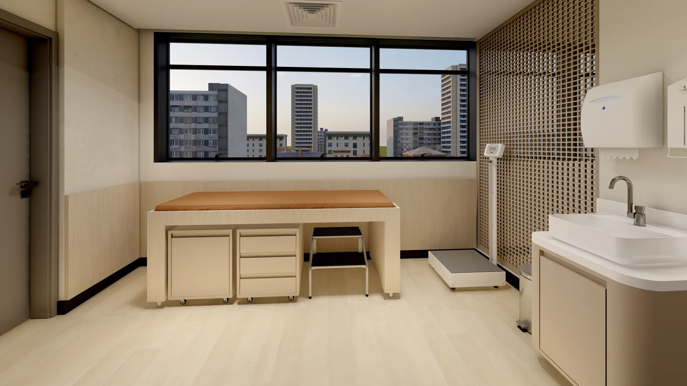
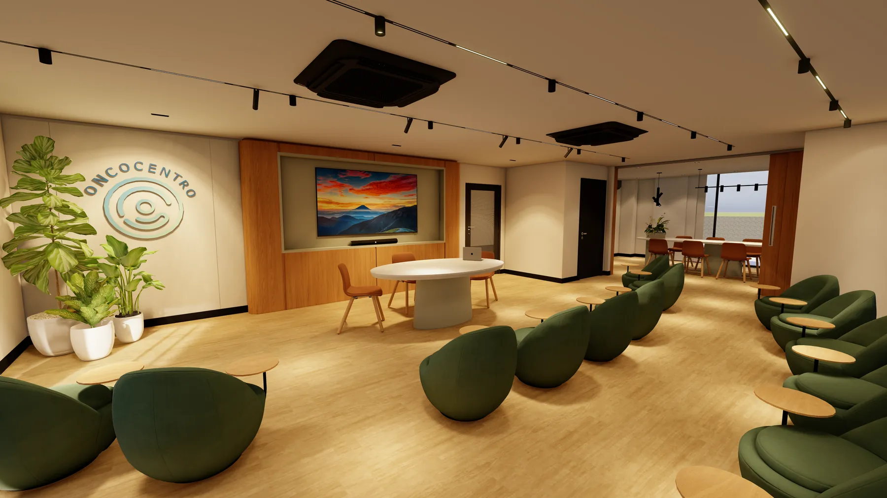
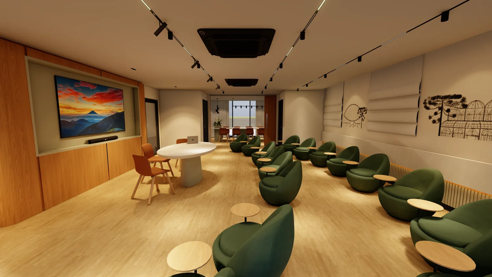
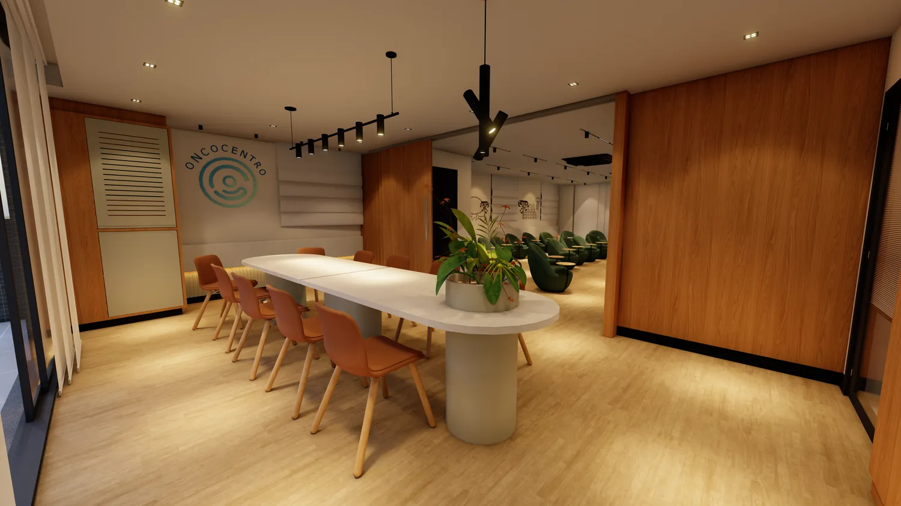
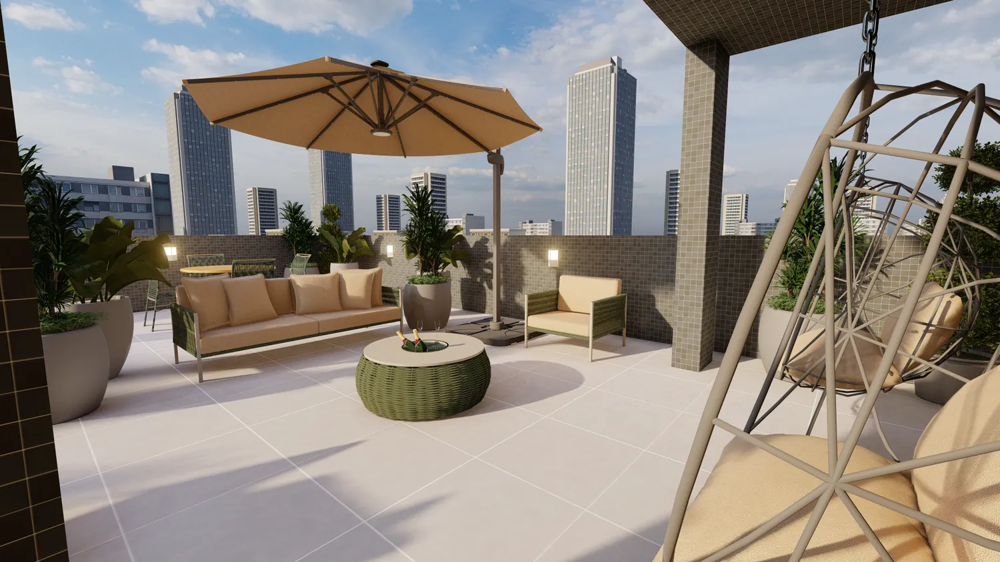

01
Planejamento
Transformar estratégia assistencial e necessidades operacionais em prioridades físicas, fases e decisões de investimento.
Planejamento, projetos, gestão e obras para hospitais, clínicas, laboratórios e demais estabelecimentos de saúde. Experiência dentro da operação assistencial desde 2015.
A ArchiMedi integra planejamento, projetos, gestão e execução de obras em ambientes de saúde. Unimos conhecimento técnico e entendimento profundo da operação assistencial para desenvolver soluções que consideram o espaço físico, o paciente, as equipes, os fluxos, a segurança, o prazo e a continuidade do atendimento.
O cliente pode entrar por qualquer necessidade e contratar somente o que precisa. Quando desejar, a ArchiMedi conduz todas as etapas de forma integrada.
Transformar estratégia assistencial e necessidades operacionais em prioridades físicas, fases e decisões de investimento.
Traduzir fluxos, requisitos técnicos, normas e experiência do paciente em soluções arquitetônicas e complementares coordenadas.
Organizar orçamento, cronograma, contratações, medições, fornecedores, documentação e acompanhamento técnico da obra.
Conduzir a execução e as interfaces técnicas para transformar o projeto em ambiente pronto para uso, inclusive por fases.

De reformas e retrofit à implantação de novos serviços, projetamos e construímos os ambientes onde o cuidado acontece.
Atuação contínua em ambientes hospitalares desde 2015, com visão prática de necessidades, fluxos e prioridades de quem administra serviços de saúde.
Soluções tecnicamente adequadas e executáveis, aproximando a concepção da realidade de campo, do conceito à entrega.
Contrate uma etapa específica ou conte com a ArchiMedi do planejamento inicial à entrega final da obra.
Rede de consultores e parceiros técnicos acionada conforme a complexidade de cada projeto, conectando arquitetura, engenharia e conhecimento assistencial.
Foco em prazo, custo, qualidade, documentação e coordenação, reduzindo interferências na operação assistencial.
Posicionamento focado em hospitais, clínicas, laboratórios, consultórios e demais estabelecimentos de saúde.

Projeto, gestão e execução de obra de implantação de unidade ambulatorial, composta por centro de quimioterapia e manipulação, centro de infusão, consultórios, recepções e áreas administrativas, com foco em acolhimento e operação assistencial.



Galerias reais do Oncocentro, unidade ambulatorial de oncologia implantada pela ArchiMedi. Clique para ampliar.
Seu negócio é saúde. A obra é a nossa.
Gestores precisam manter o foco na assistência sem transformar uma reforma em uma segunda atividade empresarial. A ArchiMedi assume uma etapa ou integra todo o processo, coordenando projetistas, fornecedores e disciplinas, com controle de prazo, custo e qualidade e sem comprometer a continuidade do atendimento.
Um caminho curto e direto, conduzido pela própria equipe técnica.
Conte a etapa ou o projeto que você precisa resolver.
Avaliamos necessidades, fluxos, prazo e condicionantes do ambiente.
Escopo, caminho técnico e próximos passos, com clareza.
Atendimento direto com a equipe técnica da ArchiMedi. Sem formulários, sem intermediários.